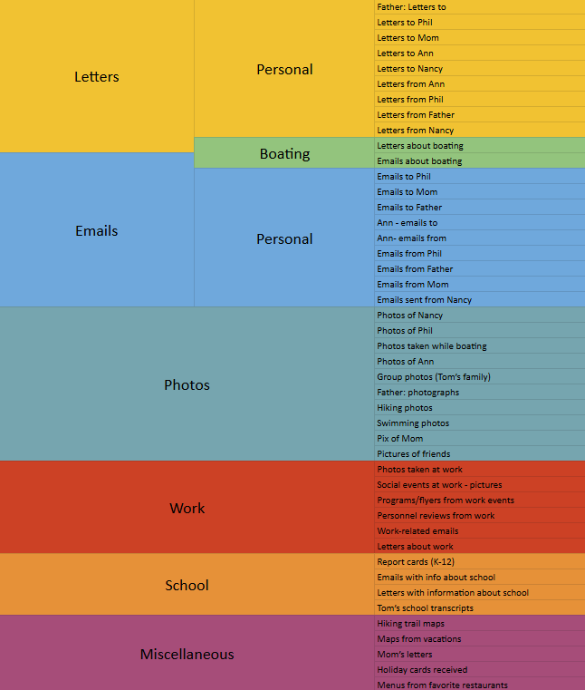

Competency F
Use the basic concepts and principles related to the selection, evaluation, organization, and preservation of physical and digital information items.
Introduction
Information organizations, such as libraries and archives, are responsible for curating, maintaining, and preserving collections to serve their user communities effectively. This competency encompasses the fundamental principles of selection, evaluation, organization, and preservation of both physical and digital information items. These processes keep collections relevant, accessible, and sustainable over time. As a professional in the field, understanding how to apply these principles is crucial for supporting the evolving needs of users, maintaining intellectual freedom, and safeguarding information for future generations.
A well-curated collection reflects the diverse perspectives and informational needs of its community. Selection must align with established collection development policies and ethical standards, such as the ALA’s Library Bill of Rights, to prevent bias and promote inclusivity. Continuous evaluation assesses materials based on relevance, usage, and cost-effectiveness, allowing libraries to maintain high-quality resources while optimizing space and funding. Effective organization through classification systems like the Dewey Decimal System and Library of Congress Classification enhances discoverability and user experience. Lastly, preservation strategies extend the lifespan of resources and address challenges like digital obsolescence, allowing for long-term accessibility.
Selection
The selection of materials is guided by collection development policies that outline criteria for acquisition, including relevance, authority, and diversity of perspectives. These policies help libraries provide resources that meet the informational, educational, and recreational needs of users while adhering to professional standards. The ALA’s Library Bill of Rights (2019) emphasizes the importance of providing materials that represent multiple viewpoints and serve all members of the community. Selecting materials in multiple formats—such as print, digital, and audiovisual—enhances accessibility and accommodates different learning preferences. Libraries must also consider language representation, making multilingual materials available to serve diverse populations. Additionally, partnerships with publishers and community organizations can expand access to high-quality, relevant materials. Academic and public libraries must balance these considerations while also factoring in budget constraints and emerging trends in information consumption (Wong, 2018).
Evaluation
Library collections require ongoing evaluation to maintain their relevance and effectiveness. This process involves assessing circulation data, user feedback, and alignment with institutional goals. Johnson (2018) highlights the importance of data-driven decision-making in collection management, allowing libraries to allocate resources wisely. Weeding, or deselection, is an important aspect of evaluation, removing outdated, redundant, or damaged materials to improve collection quality. Periodic diversity audits can also help identify gaps and underrepresented voices within collections, promoting inclusivity and representation. As digital resources become increasingly prevalent, libraries must assess electronic subscriptions and databases to determine their impact on user engagement and cost efficiency. Licensing agreements and digital rights management considerations further complicate the evaluation process, requiring careful negotiation to maximize accessibility while staying within budget constraints (Disher, 2018).
Organization
Effective organization is key to helping users locate and retrieve information efficiently. Libraries utilize established classification systems, such as the Dewey Decimal System and the Library of Congress Classification, to provide consistency and ease of navigation. Beyond classification, the physical and digital arrangement of materials plays a crucial role in user experience (McDonald, 2022). Library spaces are often structured to serve different user groups, with designated areas for children, teens, and adults. Signage, intuitive layouts, and digital wayfinding tools further improve accessibility (McDonald, 2022). Similarly, digital collections require metadata and indexing to enhance searchability and accessibility across platforms. User-driven tagging and folksonomies can supplement traditional classification systems, making digital collections more adaptable to user needs. Libraries must continuously refine organizational strategies to enhance discovery and improve the overall user experience (Wong, 2018).
Preservation
Preservation safeguards the longevity and usability of both physical and digital collections. Traditional preservation techniques focus on climate control, proper handling, and conservation methods to prevent deterioration. Proactive maintenance, such as rebinding damaged books and repairing fragile materials, extends the lifespan of physical collections. Other physical preservation methods include encapsulation, deacidification, and controlled storage environments that mitigate damage from light, humidity, and pests (Gracy & Kahn, 2012). Digital preservation, on the other hand, addresses challenges such as format obsolescence and data degradation. Skinner (2022) discusses key preservation strategies, including refreshing (transferring data to new storage media), reformatting (converting materials into sustainable formats), and emulation (replicating outdated software environments). Additionally, digital preservation often involves migration, which updates file formats to current standards, and digital forensics, which helps recover corrupted or at-risk files (Harvey & Mahard, 2020). Libraries and archives must adopt these strategies to protect their collections and provide continued access to valuable resources. Institutional repositories and open-access initiatives further contribute to digital preservation by promoting sustainable access to scholarly materials.
Evidence
Collection Development and Prize Book Selection (San José Public Library)

As a staff member at San José Public Library and a member of the Graphic Novel Making Contest (GNMC) committee, I actively contributed to the selection and evaluation of graphic novels and digital resources to build diverse, engaging collections. My work involved curating book lists on Bibliocommons to highlight underrepresented voices and celebrate cultural diversity. Two of the lists I created include:
-
Graphic Novels to Celebrate AAPI Heritage Month
- American Library Association. (2019). Library Bill of Rights. https://www.ala.org/advocacy/intfreedom/librarybill .
- Gracy, K. F., & Kahn, M. B. (2012). Preservation in the digital age. Library Resources & Technical Services, 56(1), 25-43.
- Disher, W. T. (2018). Managing collections. In S. K. Hirsh (Ed.), Information services today: An introduction (2nd ed., pp. 288-297). Rowman & Littlefield.
- Harvey, R., & Mahard, M. R. (2020). The preservation management handbook: A 21st-century guide for libraries, archives, and museums. Rowman & Littlefield.
- Johnson, P. (2018). Fundamentals of collection development and management. American Library Association.
- McDonald, A. (2022). Library space planning: A how-to-do-it manual. ALA Neal-Schuman.
- Skinner, K. (2022). Curation and preservation. In S. Hirsh (Ed.), Information services today (3rd ed., pp. 179-191). Rowman & Littlefield.
- Wong, M. A. (2018). Developing and managing library collections. In K. Haycock & M.-J. Romaniuk (Eds.), The portable MLIS: Insights from the experts (2nd ed., pp. 137-152). Libraries Unlimited, an imprint of ABC-CLIO.
Manga Heroines: Girls Doing Big Things
Beyond curating book lists, I am apart of the team responsible for selecting the prize books distributed to all GNMC participants at the awards ceremony annually. This required reviewing a wide range of new graphic novels and carefully choosing 5-6 books for each age group, creating a diverse and high-quality selection that reflected both literary merit, price range, and audience interest. These curated lists and prize book selections support collection development by providing materials that align with the interests and informational needs of the library’s diverse user base. By evaluating and recommending materials that reflect different perspectives and cultural narratives, I contributed to the inclusivity and accessibility of the library’s collection. This experience demonstrates my ability to assess, select, and organize materials based on user demand, cultural significance, and literary quality, aligning with Competency F’s principles of selection and evaluation.
Group Project: Card Sorting (INFO 202)
In Information Retrieval System Design (INFO 202), I actively participated in a card sorting group project to analyze how users categorize and organize digital information. This exercise examined user behavior in structuring content for a website dedicated to preserving personal histories. My role involved both participating in the sorting process and analyzing the results, allowing me to experience firsthand how different organizational structures emerge based on user perspectives.
I was one of eight participants who sorted cards representing various types of content, such as letters, emails, photos, and documents, into meaningful categories. Some participants grouped items by person (e.g., “Mom,” “Ann,” “Phil”), while others sorted by format or function (e.g., “Letters,” “Emails”). From my analysis, I identified a subject-based hierarchical organization as the most effective structure. This method grouped content into broad subjects—such as communication (letters, emails), activities (boating, hiking, work), and documentation (photos, school records, miscellaneous items)—with alphabetical ordering within subcategories to enhance accessibility.
This project highlighted how users create different organizational structures, emphasizing the need for intuitive navigation in digital archives. Common patterns emerged, such as the frequent use of “Miscellaneous” for unclassified items and the tendency to associate correspondence with specific individuals. Analyzing these patterns deepened my understanding of how classification impacts information retrieval and accessibility. Just as libraries use classification schemes and metadata, this exercise underscored the importance of logical structuring and the need for adaptable organization strategies to accommodate different user perspectives.
Digital Archival Project: Freshwater Aquascaping Styles (INFO 284)
For Digital Curation (INFO 284), I completed a digital archival project using Preservica Starter to curate and preserve a collection on freshwater aquascaping styles. This project applied the DCC Lifecycle Model and OAIS framework, focusing long-term accessibility and sustainability. By structuring metadata and addressing digital preservation concerns, I developed a collection that remains meaningful for aquascaping enthusiasts and environmental advocates.
Though this was a group project, I chose to work independently due to time constraints. I curated a collection featuring major aquascaping styles, including Nature Aquarium, Iwagumi, Dutch, Biotope, and Forest layouts, while highlighting the contributions of influential aquascapers such as Takashi Amano and George Farmer. The collection compiles visually rich and educational resources, including competition-winning aquascapes and instructional materials, to provide an accessible and informative experience for users.
To ensure proper organization, I employed the Dublin Core Metadata Element Set to describe and structure the collection, enhancing searchability and usability. This project demonstrates my competency in digital preservation, metadata application, and strategic collection curation. It highlights my ability to evaluate and organize digital content effectively while applying best practices for long-term accessibility and preservation.
Conclusion
Public libraries are more than repositories of books—they are unique spaces where communities engage with knowledge, culture, and each other. Thoughtful selection, evaluation, organization, and preservation of materials by information professionals allows libraries to remain relevant and responsive to the needs of their users. My passion for public librarianship is rooted in the belief that well-curated collections and sustainable preservation practices can empower individuals in certain ways and strengthen the community's involvement. By continuously refining these practices, I hope to contribute to libraries that are inclusive, accessible, and prepared for the evolving landscape of information access. My experiences in collection development and digital preservation have reinforced my dedication to ensuring that libraries remain invaluable resources that connect people to the ever-changing information they need.